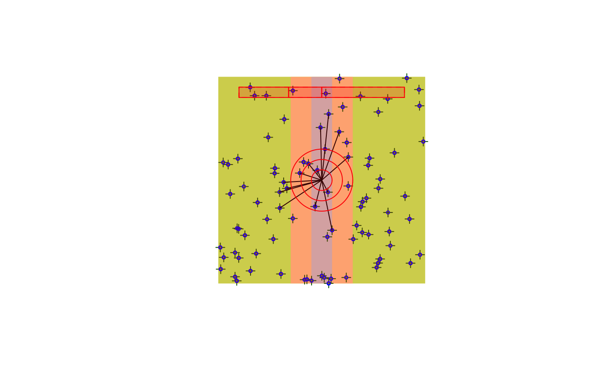
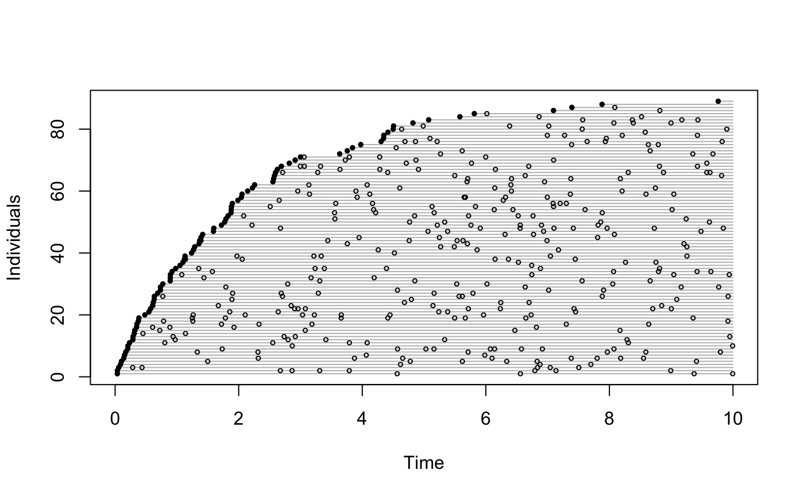
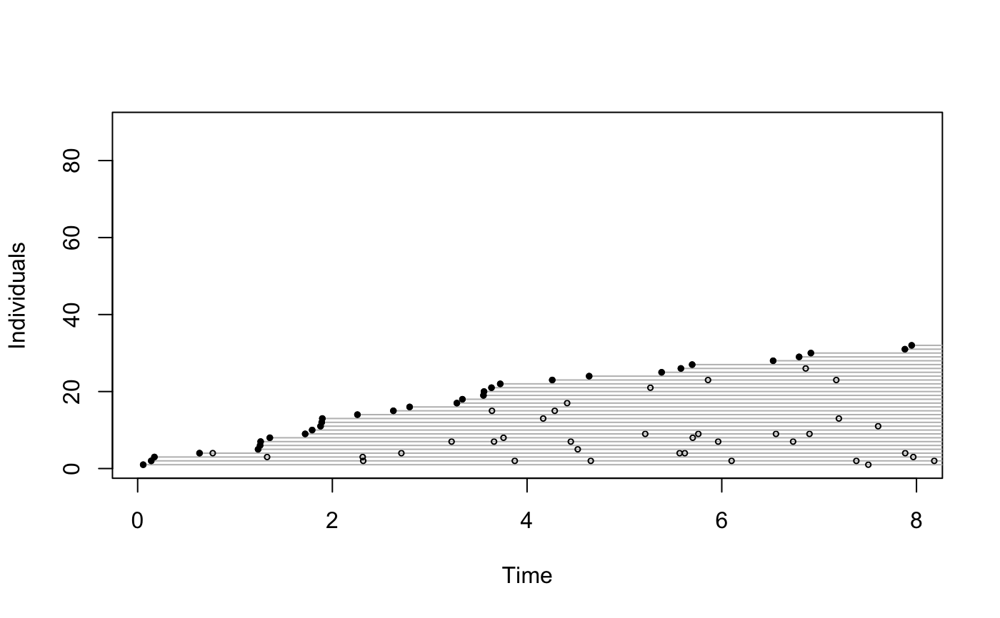
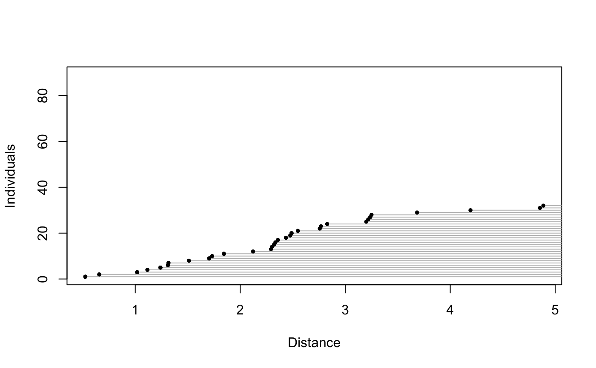

bsims_init.RdFunctions to initialize, populate, animate, detect, and transcribe simulated birds in a point count.
bsims_init(extent = 10, road = 0, edge = 0, offset = 0) bsims_populate(x, density = 1, abund_fun = NULL, xy_fun = NULL, margin = 0, maxit = 100, fail = FALSE, ...) bsims_animate(x, vocal_rate = 1, move_rate = 0, duration = 10, movement = 0, mixture = 1, avoid = c("none", "R", "ER"), initial_location=FALSE, allow_overlap=TRUE, ...) bsims_detect(x, xy = c(0, 0), tau = 1, dist_fun = NULL, event_type = c("vocal", "move", "both"), ...) bsims_transcribe(x, tint = NULL, rint = Inf, error = 0, condition=c("event1", "det1", "alldet"), event_type=NULL, perception=NULL, ...) bsims_all(...) # S3 method for bsims_landscape print(x, ...) # S3 method for bsims_population print(x, ...) # S3 method for bsims_events print(x, ...) # S3 method for bsims_detections print(x, ...) # S3 method for bsims_transcript print(x, ...) # S3 method for bsims_all print(x, ...) get_table(x, type = c("removal", "visits"))
| extent | extent of simulation area, an extent x extent square with (0,0) at the center. |
|---|---|
| road | half width of the road stratum (parallel to the y axis). |
| edge | width of edge, same width on both sides of the road stratum. |
| offset | offset to apply to road and edge strata relative to the center in the x direction. |
| x | a simulation object. |
| density | population density, D, recycled 3x for HER |
| abund_fun | function to simulate abundance, N ~ Poisson(lambda), lambda=DA by default. |
| xy_fun | function to simulate nest locations, see |
| margin, maxit, fail | arguments passed to |
| vocal_rate, move_rate | Vocal and movement rates (see |
| movement, duration | arguments passed to |
| mixture | finite mixture group proportions, can be a matrix referring population segments. |
| avoid | strata to avoid by movement. |
| initial_location | logical, |
| allow_overlap | logical, allows overlap between neighbor nests when movement is involved.
If |
| xy | position of the observer. |
| tau | parameter of the distance function. |
| dist_fun | distance function (1st argument is distance, second is tau). |
| event_type | type of events to access. Inferred from input object when |
| tint | time interval break points. |
| rint | distance interval break points. |
| condition | conditioning type to define availability for each individual:
|
| error | log scale standard deviation for distance estimation error,
see |
| perception | perceived number of individuals relative to the actual number of individuals
(a non-negative number, <1 values lead to under counting, >1 values lead to over counting),
or |
| type | character, the type of table to return: removal or visits. |
| ... | other arguments passed to underlying functions. For |
The functions are supposed to be called in sequence, allowing to simulate multiple realities by keeping preceding layers intact. Construction allows easy piping.
bsims_init returns a landscape object.
bsims_populate returns a population object.
bsims_animate returns an events object.
bsims_detect returns a detections object.
bsims_transcribe returns a transcript object.
get_table returns the removal table.
bsims_all returns a closure with
$settings(), $new(), and $replicate(B, cl=NULL)
functions. The settings function returns the input arguments as a list,
the new function returns a single transcript object.
The replicate function takes an argument for the
number of replicates (B) and returns a list of transcript objects.
The cl argument is used to parallelize the work,
can be a numeric value on Unix/Linux/OSX, or a cluster object on any OS,
see examples.
Note that simulated objects returned by bsims_all
will contain different realizations and all the conditionally
independent layers. Use a layered approach if former layers are meant
to be kept identical across runs.
acceptreject, events,
get_events, get_detections,
plotting functions plot.bsims_landscape.
phi <- 0.5 tau <- 1:3 dur <- 10 rbr <- c(0.5, 1, 1.5, Inf) tbr <- c(3, 5, 10) (l <- bsims_init(10, 0.5, 1))#> bSims landscape #> 1 km x 1 km #> stratification: HER(p <- bsims_populate(l, 1))#> bSims population #> 1 km x 1 km #> stratification: HER #> total abundance: 92(a <- bsims_animate(p, vocal_rate=phi, duration=dur))#> bSims events #> 1 km x 1 km #> stratification: HER #> total abundance: 92 #> duration: 10 min(o <- bsims_detect(a, tau=tau))#> bSims detections #> 1 km x 1 km #> stratification: HER #> total abundance: 92 #> duration: 10 min #> detected: 31 heard(x <- bsims_transcribe(o, tint=tbr, rint=rbr))#> bSims transcript #> 1 km x 1 km #> stratification: HER #> total abundance: 92 #> duration: 10 min #> detected: 31 heard #> 1st event detected by breaks: #> [0, 3, 5, 10 min] #> [0, 50, 100, 150, Inf m]plot(x)get_table(x, "removal")#> 0-3min 3-5min 5-10min #> 0-50m 1 1 0 #> 50-100m 3 1 0 #> 100-150m 2 0 0 #> 150+m 5 0 0get_table(x, "visits")#> 0-3min 3-5min 5-10min #> 0-50m 1 2 1 #> 50-100m 3 3 4 #> 100-150m 2 0 1 #> 150+m 5 5 9#> x y t v i #> 1 4.009796 1.7976807 0.003453022 1 70 #> 2 1.410808 -0.3245988 0.004115677 1 62 #> 3 -3.473786 -0.9058883 0.028479105 1 1 #> 4 -1.040369 -1.2016781 0.055751432 1 40 #> 5 -4.400550 -4.4406871 0.115042071 1 11 #> 6 -1.692110 -2.8050580 0.149915833 1 7#> x y t v d i j #> 2 1.4108078 -0.3245988 0.004115677 1 1.4476681 62 62 #> 4 -1.0403689 -1.2016781 0.055751432 1 1.5894647 40 40 #> 18 1.0733794 -2.2953770 0.341309576 1 2.5339493 58 58 #> 23 0.1282475 -0.2522818 0.449940288 1 0.2830080 48 48 #> 33 0.4799047 0.2999041 0.656589126 1 0.5659072 52 52 #> 52 0.9032164 -0.1727605 1.073981445 1 0.9195902 61 61## wrapper function for all the bsims_* layers b <- bsims_all(road=1, density=0.5, tint=tbr, rint=rbr) ## alternatively: supply a list #settings <- list(road=1, density=0.5, tint=tbr, rint=rbr) #b <- bsims_all(settings) b$settings()#> $road #> [1] 1 #> #> $density #> [1] 0.5 #> #> $tint #> [1] 3 5 10 #> #> $rint #> [1] 0.5 1.0 1.5 Inf #>b$new()#> bSims transcript #> 1 km x 1 km #> stratification: HR #> total abundance: 47 #> duration: 10 min #> detected: 8 heard #> 1st event detected by breaks: #> [0, 3, 5, 10 min] #> [0, 50, 100, 150, Inf m]#> [[1]] #> 0-3min 3-5min 5-10min #> 0-50m 0 0 0 #> 50-100m 1 0 0 #> 100-150m 1 0 0 #> 150+m 0 0 0 #> #> [[2]] #> 0-3min 3-5min 5-10min #> 0-50m 0 0 0 #> 50-100m 2 0 0 #> 100-150m 0 0 0 #> 150+m 0 0 0 #> #> [[3]] #> 0-3min 3-5min 5-10min #> 0-50m 0 0 0 #> 50-100m 1 0 0 #> 100-150m 0 0 0 #> 150+m 0 0 0 #>## parallel simulations library(parallel) b <- bsims_all(density=0.5) B <- 4 # number of runs nc <- 2 # number of cores ## sequential system.time(bb <- b$replicate(B, cl=NULL))#> user system elapsed #> 0.589 0.004 0.595## parallel clusters cl <- makeCluster(nc) ## note: loading the package is optional system.time(clusterEvalQ(cl, library(bSims)))#> user system elapsed #> 0.001 0.000 1.332#> user system elapsed #> 0.006 0.001 0.506stopCluster(cl) ## parallel forking if (.Platform$OS.type != "windows") { system.time(bb <- b$replicate(B, cl=nc)) }#> user system elapsed #> 0.005 0.006 0.582